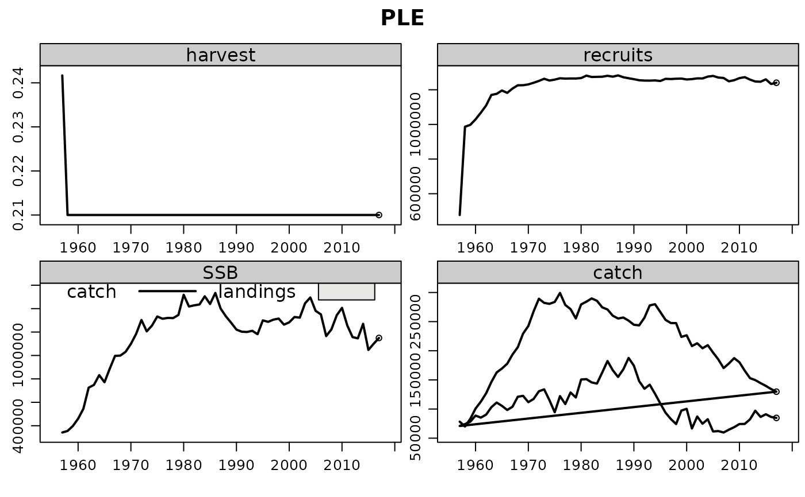

Projection of an FLStock object for a fishing mortality target does not
always require the features of fwd().Fast-forward an FLStock object for a fishing mortality yearly target only.
Usage
ffwd(object, sr, fbar = control, control = fbar, deviances = "missing")
Arguments
- object
An FLStock
- sr
A stock-recruit relationship, FLSR or predictModel.
- fbar
Yearly target for average fishing mortality, FLQuant.
- control
Yearly target for average fishing mortality, fwdControl.
- deviances
Deviances for the strock-recruit relationsip, FLQuant.
Value
The projected FLStock object.
Author
Iago MOSQUEIRA (MWR), Henning WINKEL (JRC).
Examples
data(ple4)
sr <- predictModel(model=bevholt, params=FLPar(a=140.4e4, b=1.448e5))
# Project for fixed Fbar=0.21
run <- ffwd(ple4, sr=sr, fbar=FLQuant(0.21, dimnames=list(year=1958:2017)))
plot(run)
